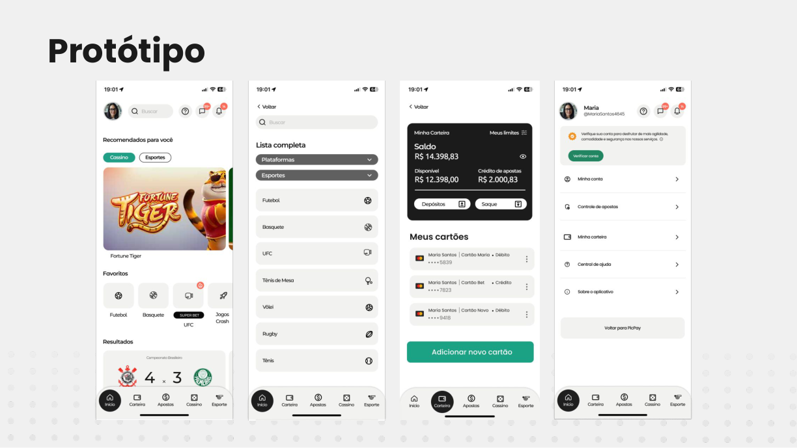
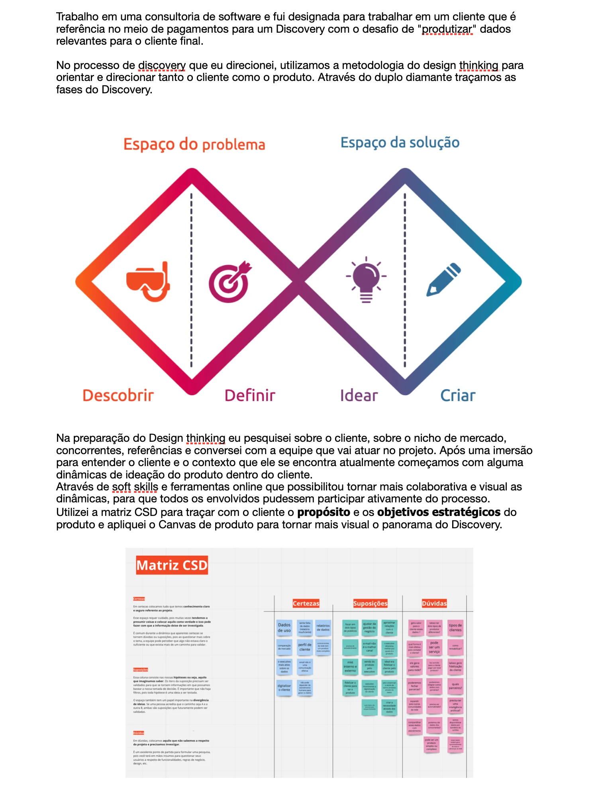
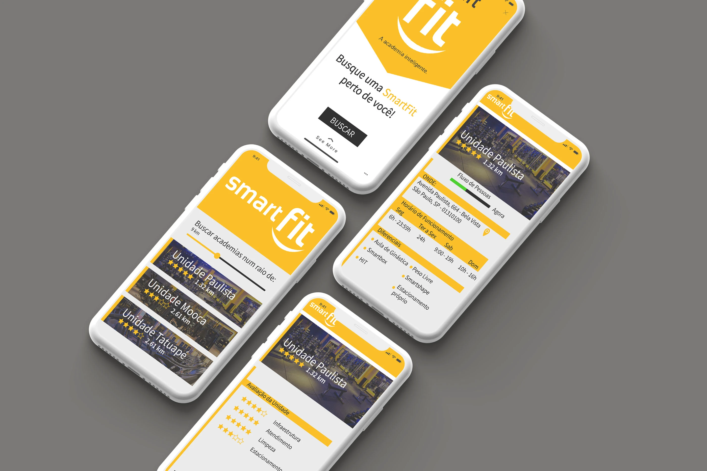

Direção
Transformo contexto de negócio e evidências de experiência em visão, prioridades e critérios claros de decisão.
- RICE, HEART e OKRs
- Métricas de experiência e operação
- Narrativa e alinhamento executivo
Product Design Manager · São Paulo
Lidero design em produtos e serviços complexos, conectando negócio, tecnologia e pessoas — da estratégia de ecossistemas ao detalhe da interface.
Liderança próxima do fazer, com repertório para navegar da visão de produto à materialização da experiência.
Sobre mim
Sou Nina Soana, Product Design Manager. Desde 2019, construo experiências digitais e lidero design em contextos complexos, conectando estratégia, operação, tecnologia e pessoas.
Minha trajetória passa por Product Design, UX, Service Design, Research e Content Design. Trabalho na interseção com Produto, Engenharia, Dados, Operações e CX para transformar problemas sistêmicos em jornadas, serviços, plataformas e interfaces mais claras.
Como líder, crio contexto para o time tomar boas decisões: combino direcionamento, autonomia, feedback contínuo, desenvolvimento de carreira e comunicação executiva — sem me afastar da interface.
Também uso vibe coding e agentes de design para acelerar pesquisa, exploração, prototipação e documentação, mantendo repertório, crítica e responsabilidade humana sobre as decisões.
Trabalho recente e selecionado
Uma seleção em ordem temporal, com contexto, contribuição, decisões e evidências — incluindo versões públicas de trabalhos confidenciais.
Da imersão com operadores à direção de uma plataforma modular e orientada a dados, conectando jornada, canais, operação e IA.
Redesenho do processo para levar tracking do monitoramento técnico à tomada de decisão de Produto e Design.
Ver case completoEstratégia e protótipo para uma experiência de iGaming que equilibra conversão, personalização, segurança e jogo responsável.
Ver case completo
Redesenho da separação de pedidos das Casas Bahia, conectando pesquisa em campo, processo operacional e interfaces mobile e web.

Condução de discovery para uma empresa do setor de pagamentos: alinhamento estratégico, benchmark, personas e entrevistas.
Ver case completo
Uma seleção de trabalhos de interface para mobile e web que registra minha base prática antes e durante a evolução para estratégia e liderança.
Ver seleção
Amplitude com profundidade
Atuo como parceira de Produto, Tecnologia, Operações e CX, criando direção e aumentando a qualidade das decisões de design.
Transformo contexto de negócio e evidências de experiência em visão, prioridades e critérios claros de decisão.
Leio a experiência como um sistema: jornada, frontstage, backstage, pessoas, políticas, processos, canais e dados.
Desenvolvo times de design com clareza de expectativas, autonomia progressiva e proximidade no dia a dia.
Interfaces, protótipos funcionais e uso responsável de IA para reduzir distância entre hipótese, teste e entrega.
IA no processo de design
Uso IA como uma camada do processo de Product Design: acelera exploração e produção, mas decisões continuam ancoradas em contexto, evidência e revisão humana.
Construo protótipos funcionais e experiências navegáveis com apoio de IA, explorando fluxos, estados, conteúdo e regras antes de comprometer uma entrega maior de Engenharia.
Estruturo agentes com papéis e critérios claros para apoiar síntese de pesquisa, exploração de alternativas, documentação, UX writing e revisão de consistência.
Transformo aprendizados em padrões, prompts, checklists e fluxos reutilizáveis para reduzir tarefas repetitivas e devolver tempo ao pensamento de produto.
Uso IA com cuidado sobre privacidade, precisão e impacto. Fontes são verificadas, dados sensíveis são protegidos e decisões relevantes permanecem sob supervisão humana.
Trajetória selecionada
Uma evolução da execução visual à liderança de sistemas, pessoas e negócio, construída entre produtos digitais, serviços e operações.
Product Design Manager
UX Lead
UX Lead
UX Lead · Senior UX Designer
UX Strategy
UX/UI Designer
Contato
Estou em São Paulo e aberta a conversas sobre Product Design, Service Design, liderança e IA aplicada.